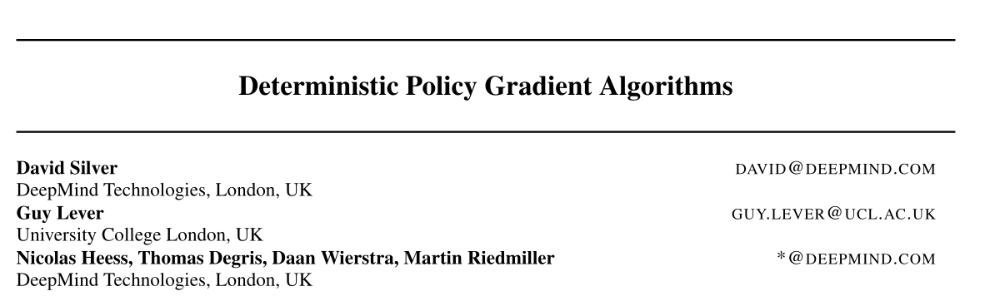
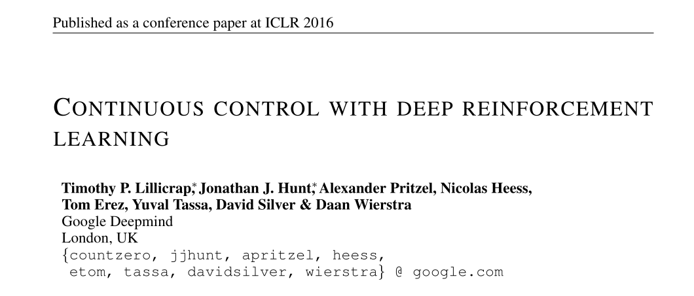
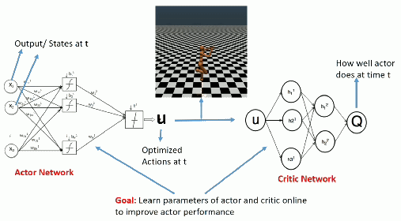
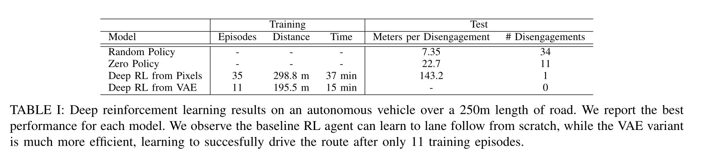
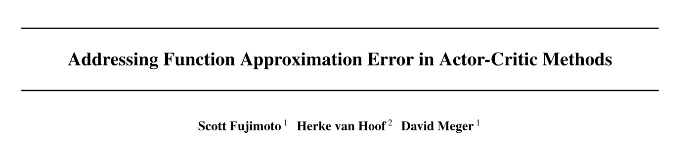
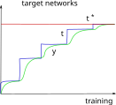
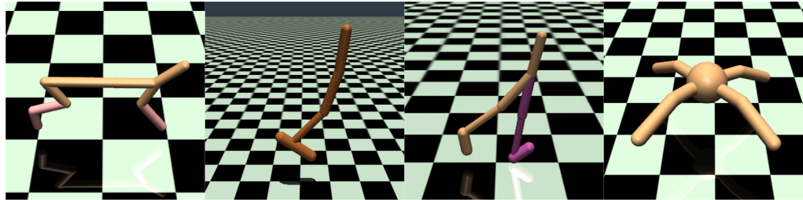
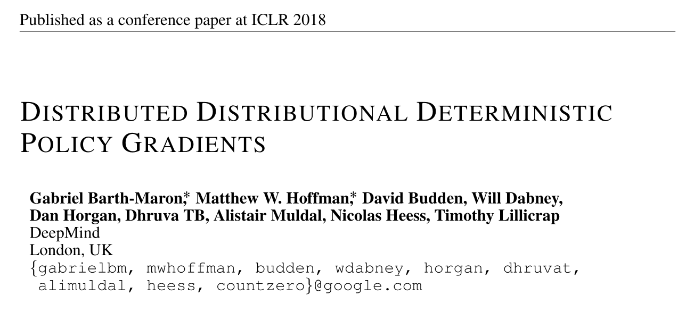
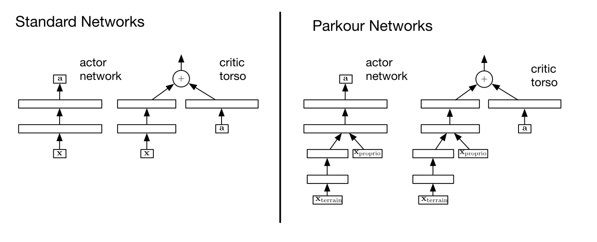

Deterministic Policy Gradient
DDPG for continuous control problems
1 - Deterministic policy gradient theorem

Deterministic policy gradient theorem
- The objective function that we tried to maximize until now is :
\[ \mathcal{J}(\theta) = \mathbb{E}_{\tau \sim \rho_\theta}[R(\tau)] \]
i.e. we want the returns of all trajectories generated by the stochastic policy \(\pi_\theta\) to be maximal.
- It is equivalent to say that we want the value of all states visited by the policy \(\pi_\theta\) to be maximal:
a policy \(\pi\) is better than another policy \(\pi'\) if its expected return is greater or equal than that of \(\pi'\) for all states \(s\).
\[\pi > \pi' \Leftrightarrow V^{\pi}(s) > V^{\pi'}(s) \quad \forall s \in \mathcal{S}\]

- The objective function can be rewritten as:
\[ \mathcal{J}'(\theta) = \mathbb{E}_{s \sim \rho_\theta}[V^{\pi_\theta}(s)] \]
where \(\rho_\theta\) is now the state visitation distribution, i.e. how often a state will be visited by the policy \(\pi_\theta\).
Deterministic policy gradient theorem
- When introducing Q-values, we obtain the following policy gradient:
\[ g = \nabla_\theta \, \mathcal{J}(\theta) = \mathbb{E}_{s \sim \rho_\theta}[\nabla_\theta \, V^{\pi_\theta}(s)] = \mathbb{E}_{s \sim \rho_\theta}[\sum_a \nabla_\theta \, \pi_\theta(s, a) \, Q^{\pi_\theta}(s, a)] \]
This formulation necessitates to integrate overall possible actions:
It is not possible with continuous action spaces (integral).
The stochastic policy adds a lot of variance: sample complexity.
But let’s suppose that the policy is deterministic, i.e. it takes a single action in state \(s\).
We can note this deterministic policy \(\mu_\theta(s)\), with:
\[ \begin{aligned} \mu_\theta : \; \mathcal{S} & \rightarrow \mathcal{A} \\ s & \; \rightarrow \mu_\theta(s) \\ \end{aligned} \]
Deterministic policy gradient theorem
- The policy gradient for the deterministic policy \(\mu_\theta(s)\) becomes:
\[ g = \nabla_\theta \, \mathcal{J}(\theta) = \mathbb{E}_{s \sim \rho_\theta}[\nabla_\theta \, Q^{\mu_\theta}(s, \mu_\theta(s))] \]

- We can now use the chain rule to decompose the gradient of \(Q^{\mu_\theta}(s, \mu_\theta(s))\):
\[\nabla_\theta \, Q^{\mu_\theta}(s, \mu_\theta(s)) = \nabla_a \, Q^{\mu_\theta}(s, a)|_{a = \mu_\theta(s)} \times \nabla_\theta \, \mu_\theta(s)\]
\(\nabla_a \, Q^{\mu_\theta}(s, a)|_{a = \mu_\theta(s)}\) means that we differentiate \(Q^{\mu_\theta}\) w.r.t. \(a\), and evaluate it in \(\mu_\theta(s)\).
- \(a\) is a variable, but \(\mu_\theta(s)\) is a deterministic value (constant).
\(\nabla_\theta \, \mu_\theta(s)\) tells how the output of the policy network varies with the parameters of NN:
- Automatic differentiation frameworks such as tensorflow can tell you that.
Deterministic policy gradient theorem
For any MDP, the deterministic policy gradient is:
\[\nabla_\theta \, \mathcal{J}(\theta) = \mathbb{E}_{s \sim \rho_\theta}[\nabla_a \, Q^{\mu_\theta}(s, a)|_{a = \mu_\theta(s)} \times \nabla_\theta \, \mu_\theta(s)]\]
As always, you do not know the true Q-value \(Q^{\mu_\theta}(s, a)\), because you search for the policy \(\mu_\theta\).
@Silver2014 showed that you can safely (without introducing any bias) replace the true Q-value with an estimate \(Q_\varphi(s, a)\), as long as the estimate minimizes the mse with the TD target:
\[Q_\varphi(s, a) \approx Q^{\mu_\theta}(s, a)\]
\[\mathcal{L}(\varphi) = \mathbb{E}_{s \sim \rho_\theta}[(r(s, \mu_\theta(s)) + \gamma \, Q_\varphi(s', \mu_\theta(s')) - Q_\varphi(s, \mu_\theta(s)))^2]\]
We come back to an actor-critic architecture:
The deterministic actor \(\mu_\theta(s)\) selects a single action in state \(s\).
The critic \(Q_\varphi(s, a)\) estimates the value of that action.
Deterministic Policy Gradient as an actor-critic architecture

Training the actor:
\[ \nabla_\theta \mathcal{J}(\theta) = \mathbb{E}_{s \sim \rho_\theta}[\nabla_\theta \, \mu_\theta(s) \times \nabla_a Q_\varphi(s, a) |_{a = \mu_\theta(s)}] \]
Training the critic:
\[ \mathcal{L}(\varphi) = \mathbb{E}_{s \sim \rho_\theta}[(r(s, \mu_\theta(s)) + \gamma \, Q_\varphi(s', \mu_\theta(s')) - Q_\varphi(s, \mu_\theta(s)))^2] \]
DPG is off-policy
- If you act off-policy, i.e. you visit the states \(s\) using a behavior policy \(b\), you would theoretically need to correct the policy gradient with importance sampling:
\[ \nabla_\theta \mathcal{J}(\theta) = \mathbb{E}_{s \sim \rho_b}[\sum_a \, \frac{\pi_\theta(s, a)}{b(s, a)} \, \nabla_\theta \, \mu_\theta(s) \times \nabla_a Q_\varphi(s, a) |_{a = \mu_\theta(s)}] \]
But your policy is now deterministic: the actor only takes the action \(a=\mu_\theta(s)\) with probability 1, not \(\pi(s, a)\).
The importance weight is 1 for that action, 0 for the other. You can safely sample states from a behavior policy, it won’t affect the deterministic policy gradient:
\[ \nabla_\theta \mathcal{J}(\theta) = \mathbb{E}_{s \sim \rho_b}[\nabla_\theta \, \mu_\theta(s) \times \nabla_a Q_\varphi(s, a) |_{a = \mu_\theta(s)}] \]
The critic uses Q-learning, so it is also off-policy.
DPG is an off-policy actor-critic architecture!
2 - DDPG: Deep Deterministic Policy Gradient

DDPG: Deep Deterministic Policy Gradient
As the name indicates, DDPG is the deep variant of DPG for continuous control.
It uses the DQN tricks to stabilize learning with deep networks:

As DPG is off-policy, an experience replay memory can be used to sample experiences.
The actor \(\mu_\theta\) learns using sampled transitions with DPG.
The critic \(Q_\varphi\) uses Q-learning on sampled transitions: target networks can be used to cope with the non-stationarity of the Bellman targets.
- Contrary to DQN, the target networks are not updated every once in a while, but slowly integrate the trained networks after each update (moving average of the weights):
\[\theta' \leftarrow \tau \theta + (1-\tau) \, \theta'\]
\[\varphi' \leftarrow \tau \varphi + (1-\tau) \, \varphi'\]
DDPG: Deep Deterministic Policy Gradient

A deterministic actor is good for learning (less variance), but not for exploring.
We cannot use \(\epsilon\)-greedy or softmax, as the actor outputs directly the policy, not Q-values.
For continuous actions, an exploratory noise can be added to the deterministic action:
\[a_t = \mu_\theta(s_t) + \xi_t\]
- Ex: if the actor wants to move the joint of a robot by \(2^o\), it will actually be moved from \(2.1^o\) or \(1.9^o\).
Ornstein-Uhlenbeck stochastic process
In DDPG, an Ornstein-Uhlenbeck stochastic process is used to add noise to the continuous actions.
It is defined by a stochastic differential equation, classically used to describe Brownian motion:
\[ dx_t = \theta (\mu - x_t) dt + \sigma dW_t \qquad \text{with} \qquad dW_t = \mathcal{N}(0, dt)\]
- The temporal mean of \(x_t\) is \(\mu= 0\), its amplitude is \(\theta\) (exploration level), its speed is \(\sigma\).

Parameter noise

Another approach to ensure exploration is to add noise to the parameters \(\theta\) of the actor at inference time.
For the same input \(s_t\), the output \(\mu_\theta(s_t)\) will be different every time.
The NoisyNet approach can be applied to any deep RL algorithm to enable a smart state-dependent exploration (e.g. Noisy DQN).
DDPG: Deep Deterministic Policy Gradient
Initialize actor network \(\mu_{\theta}\) and critic \(Q_\varphi\), target networks \(\mu_{\theta'}\) and \(Q_{\varphi'}\), ERM \(\mathcal{D}\) of maximal size \(N\), random process \(\xi\).
for \(t \in [0, T_\text{max}]\):
Select the action \(a_t = \mu_\theta(s_t) + \xi\) and store \((s_t, a_t, r_{t+1}, s_{t+1})\) in the ERM.
For each transition \((s_k, a_k, r_k, s'_k)\) in a minibatch of \(K\) transitions randomly sampled from \(\mathcal{D}\):
- Compute the target value using target networks \(t_k = r_k + \gamma \, Q_{\varphi'}(s'_k, \mu_{\theta'}(s'_k))\).
Update the critic by minimizing: \[\mathcal{L}(\varphi) = \frac{1}{K} \sum_k (t_k - Q_\varphi(s_k, a_k))^2\]
Update the actor by applying the deterministic policy gradient: \[\nabla_\theta \mathcal{J}(\theta) = \frac{1}{K} \sum_k \nabla_\theta \mu_\theta(s_k) \times \nabla_a Q_\varphi(s_k, a) |_{a = \mu_\theta(s_k)}\]
Update the target networks: \(\theta' \leftarrow \tau \theta + (1-\tau) \, \theta' \; ; \; \varphi' \leftarrow \tau \varphi + (1-\tau) \, \varphi'\)
DDPG: Deep Deterministic Policy Gradient
DDPG allows to learn continuous policies: there can be one tanh output neuron per joint in a robot.
The learned policy is deterministic: this simplifies learning as we do not need to integrate over the action space after sampling.
Exploratory noise (e.g. Ohrstein-Uhlenbeck) has to be added to the selected action during learning in order to ensure exploration.
Allows to use an experience replay memory, reusing past samples (better sample complexity than A3C).
DDPG: continuous control
{{< youtube iFg5lcUzSYU >}}3 - DDPG: learning to drive in a day
DDPG: learning to drive in a day
{{< youtube eRwTbRtnT1I >}}DDPG: learning to drive in a day

The algorithm is DDPG with prioritized experience replay.
Training is live, with an on-board NVIDIA Drive PX2 GPU.
A simulated environment is first used to find the hyperparameters.
Autoencoders in deep RL
- A variational autoencoder (VAE) is optionally use to pretrain the convolutional layers on random episodes.

DDPG: learning to drive in a day


Skipped
4 - TD3 - Twin Delayed Deep Deterministic policy gradient

TD3 - Twin Delayed Deep Deterministic policy gradient
As any Q-learning-based method, DDPG overestimates Q-values.
The Bellman target \(t = r + \gamma \, \max_{a'} Q(s', a')\) uses a maximum over other values, so it is increasingly overestimated during learning.
After a while, the overestimated Q-values disrupt training in the actor.

- Double Q-learning solves the problem by using the target network \(\theta'\) to estimate Q-values, but the value network \(\theta\) to select the greedy action in the next state:
\[ \mathcal{L}(\theta) = \mathbb{E}_\mathcal{D} [(r + \gamma \, Q_{\theta'}(s´, \text{argmax}_{a'} Q_{\theta}(s', a')) - Q_\theta(s, a))^2] \]
The idea is to use two different independent networks to reduce overestimation.
This does not work well with DDPG, as the Bellman target \(t = r + \gamma \, Q_{\varphi'}(s', \mu_{\theta'}(s'))\) uses a target actor network that is not very different from the trained deterministic actor.
TD3 - Twin Delayed Deep Deterministic policy gradient
TD3 uses two critics \(\varphi_1\) and \(\varphi_2\) (and target critics):
- the Q-value used to train the actor will be the lesser of two evils, i.e. the minimum Q-value:
\[t = r + \gamma \, \min(Q_{\varphi'_1}(s', \mu_{\theta'}(s')), Q_{\varphi'_2}(s', \mu_{\theta'}(s')))\]
One of the critic will always be less over-estimating than the other. Better than nothing…
Using twin critics is called clipped double learning.
Both critics learn in parallel using the same target:
\[\mathcal{L}(\varphi_1) = \mathbb{E}[(t - Q_{\varphi_1}(s, a))^2] \qquad ; \qquad \mathcal{L}(\varphi_2) = \mathbb{E}[ (t - Q_{\varphi_2}(s, a))^2]\]
- The actor is trained using the first critic only:
\[\nabla_\theta \mathcal{J}(\theta) = \mathbb{E}[ \nabla_\theta \mu_\theta(s) \times \nabla_a Q_{\varphi_1}(s, a) |_{a = \mu_\theta(s)} ]\]
TD3 - Twin Delayed Deep Deterministic policy gradient
- Another issue with actor-critic architecture in general is that the critic is always biased during training, what can impact the actor and ultimately collapse the policy:
\[\nabla_\theta \mathcal{J}(\theta) = \mathbb{E}[ \nabla_\theta \mu_\theta(s) \times \nabla_a Q_{\varphi_1}(s, a) |_{a = \mu_\theta(s)} ]\]
\[Q_{\varphi_1}(s, a) \approx Q^{\mu_\theta}(s, a)\]
- The critic should learn much faster than the actor in order to provide unbiased gradients.

Increasing the learning rate in the critic creates instability, reducing the learning rate in the actor slows down learning.
The solution proposed by TD3 is to delay the update of the actor, i.e. update it only every \(d\) minibatches:
Train the critics \(\varphi_1\) and \(\varphi_2\) on the minibatch.
every \(d\) steps:
- Train the actor \(\theta\) on the minibatch.
This leaves enough time to the critics to improve their prediction and provides less biased gradients to the actor.
TD3 - Twin Delayed Deep Deterministic policy gradient
A last problem with deterministic policies is that they tend to always select the same actions \(\mu_\theta(s)\) (overfitting).
For exploration, some additive noise is added to the selected action:
\[a = \mu_\theta(s) + \xi\]
- But this is not true for the Bellman targets, which use the deterministic action:
\[t = r + \gamma \, Q_{\varphi}(s', \mu_{\theta}(s'))\]
- TD3 proposes to also use additive noise in the Bellman targets:
\[t = r + \gamma \, Q_{\varphi}(s', \mu_{\theta}(s') + \xi)\]
If the additive noise is zero on average, the Bellman targets will be correct on average (unbiased) but will prevent overfitting of particular actions.
The additive noise does not have to be an Ornstein-Uhlenbeck stochastic process, but could simply be a random variable:
\[\xi \sim \mathcal{N}(0, 1)\]
Initialize actor \(\mu_{\theta}\), critics \(Q_{\varphi_1}, Q_{\varphi_2}\), target networks \(\mu_{\theta'}, Q_{\varphi_1'},Q_{\varphi_2'}\), ERM \(\mathcal{D}\), random processes \(\xi_1, \xi_2\).
for \(t \in [0, T_\text{max}]\):
Select the action \(a_t = \mu_\theta(s_t) + \xi_1\) and store \((s_t, a_t, r_{t+1}, s_{t+1})\) in the ERM.
For each transition \((s_k, a_k, r_k, s'_k)\) in a minibatch sampled from \(\mathcal{D}\):
- Compute the target \(t_k = r_k + \gamma \, \min(Q_{\varphi_1'}(s'_k, \mu_{\theta'}(s'_k) + \xi_2), Q_{\varphi_2'}(s'_k, \mu_{\theta'}(s'_k) + \xi_2))\).
Update the critics by minimizing: \[\mathcal{L}(\varphi_1) = \frac{1}{K} \sum_k (t_k - Q_{\varphi_1}(s_k, a_k))^2 \qquad ; \qquad \mathcal{L}(\varphi_2) = \frac{1}{K} \sum_k (t_k - Q_{\varphi_2}(s_k, a_k))^2\]
every \(d\) steps:
Update the actor by applying the DPG using \(Q_{\varphi_1}\): \[\nabla_\theta \mathcal{J}(\theta) = \frac{1}{K} \sum_k \nabla_\theta \mu_\theta(s_k) \times \nabla_a Q_{\varphi_1}(s_k, a) |_{a = \mu_\theta(s_k)}\]
Update the target networks: \[\theta' \leftarrow \tau \theta + (1-\tau) \, \theta' \; ; \; \varphi_1' \leftarrow \tau \varphi_1 + (1-\tau) \, \varphi_1' \; ; \; \varphi_2' \leftarrow \tau \varphi_2 + (1-\tau) \, \varphi_2'\]
TD3 - Twin Delayed Deep Deterministic policy gradient
TD3 introduces three changes to DDPG:
- twin critics.
- delayed actor updates.
- noisy Bellman targets.

- TD3 outperforms DDPG (but also PPO and SAC) on continuous control tasks.

5 - D4PG: Distributed Distributional DDPG

D4PG: Distributed Distributional DDPG
Deterministic policy gradient as in DDPG: \[\nabla_\theta \mathcal{J}(\theta) = \mathbb{E}_{s \sim \rho_b}[\nabla_\theta \mu_\theta(s) \times \nabla_a \mathbb{E} [\mathcal{Z}_\varphi(s, a)] |_{a = \mu_\theta(s)}]\]
Distributional critic: The critic does not predict single Q-values \(Q_\varphi(s, a)\), but the distribution of returns \(\mathcal{Z}_\varphi(s, a)\) (as in Categorical DQN): \[\mathcal{L}(\varphi) = \mathbb{E}_{s \in \rho_b} [ \text{KL}(\mathcal{T} \, \mathcal{Z}_\varphi(s, a) || \mathcal{Z}_\varphi(s, a))]\]
n-step returns (as in A3C): \[\mathcal{T} \, \mathcal{Z}_\varphi(s_t, a_t)= \sum_{k=0}^{n-1} \gamma^{k} \, r_{t+k+1} + \gamma^n \, \mathcal{Z}_\varphi(s_{t+n}, \mu_\theta(s_{t+n}))\]
Distributed workers: D4PG uses \(K=32\) or \(64\) copies of the actor to fill the ERM in parallel.
Prioritized Experience Replay (PER): \(P(k) = \frac{(|\delta_k| + \epsilon)^\alpha}{\sum_k (|\delta_k| + \epsilon)^\alpha}\)

D4PG: Parkour
{{< youtube 9kGdCjJtNls >}}Parkour networks
For Parkour tasks, the states cover two different informations: the terrain (distance to obstacles, etc.) and the proprioception (joint positions of the agent).
They enter the actor and critic networks at different locations.
